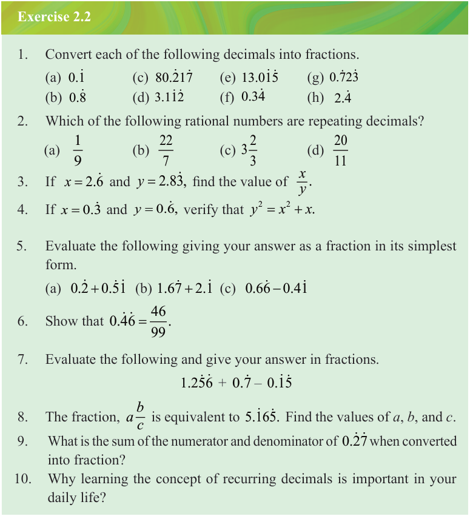

Subtract equation (i) from equation (ii) and solve for as follows:
1000x - x = 2105.\dot{1}\dot{0}\dot{5} - 2.\dot{1}\dot{0}\dot{5}
999x = 2103
Therefore, into fraction is .

Exercise 2.2
1. Convert each of the following decimals into fractions.
(a)
(b)
(c)
(d)
(e)
(f)
(g)
(h)
2. Which of the following rational numbers are repeating decimals?
(a)
(b)
(c)
(d)
3. If and , find the value of .
4. If and , verify that .
5. Evaluate the following giving your answer as a fraction in its simplest form.
(a)
(b)
(c)
6. Show that .
7. Evaluate the following and give your answer in fractions.
1.25\dot{6} + 0.\dot{7} - 0.1\dot{5}
8. The fraction, is equivalent to .
Find the values of , , and .
9. What is the sum of the numerator and denominator of when converted into fraction?
10. Why learning the concept of recurring decimals is important in your daily life?